OFraMP Help
Welcome at the help pages for the Online tool for Fragment-based Molecule Parameterisation. Here, you will be able to find information about OFraMP in general, how to use it, detailed information about its more advanced features and how to solve potential errors.
About OFraMP
OFraMP is an Online tool for Fragment-based Molecule Parameterisation. OFraMP allows the user to obtain atomic charges for a molecule in the ATB database from fragments of similar molecules.
OFraMP was originally created by Jimmi van der Woning, a Masters student in Software Engineering at the Centrum Wiskunde & Informatica (CWI), University of Amsterdam.
Getting started with OFraMP
In order to use OFraMP one must first login to the Automated Topology Builder (ATB): http://atb.uq.edu.au/login.py. Once logged in, a user can then either find their molecule of interest in the existing database via the "Existing Molecules" tab, or submit a new molecule via the "Submit" tab.
OFraMP can be launched for a particular molecule from its page on the ATB site using the button "Fragment-Based Parametrisation with OFraMP" located near the top of the page.
In some cases the OFraMP page may look like either one of the following:
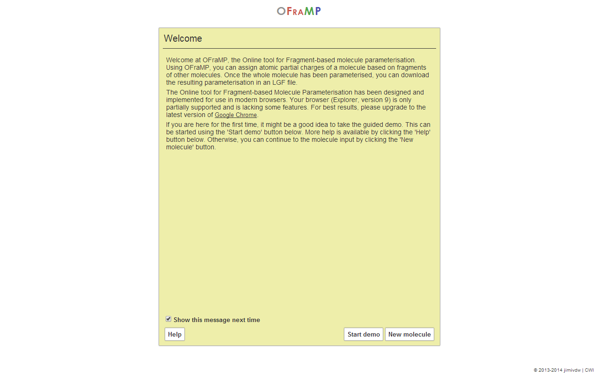
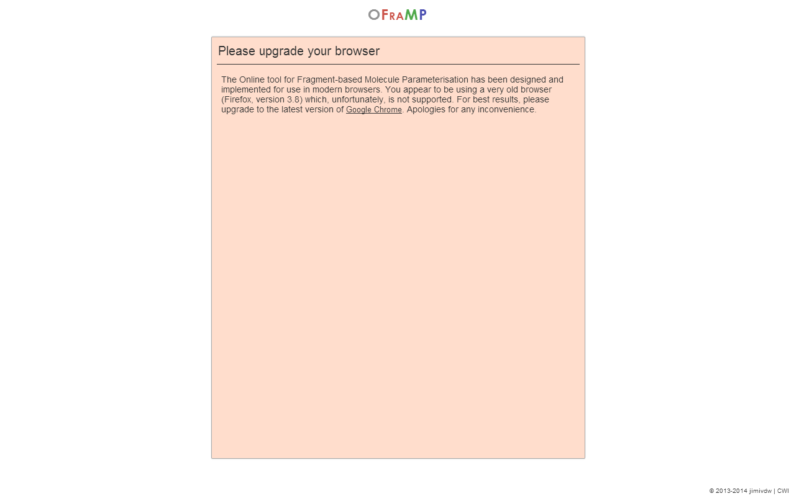
In cases where the site matches the first of these screenshots (with yellow background), there is not necessarily a problem. It does mean, however, that the system will be functioning less smooth and, depending on your browser, some functionality may not be available.
When you see a screen matching the second screenshot (red background), you need to use a different browser if you want to use OFraMP. In this case, you are using a browser of over five years old, which is not supported.
In either of these two cases, it is advisable to upgrade your browser to the latest version of Google Chrome, which can be downloaded here. OFraMP has been implemented on and optimised for Chrome, as this is currently the best performing browser for canvas drawing (which is used to display the molecules).
Entering a molecule into OFraMP
There is a feature with allows for an ATB molecule identifier to be entered into OFraMP directly, however, this feature comes with significant limitations and is not recommended.
Viewing the molecule
After clicking the OFraMP link from the ATB site, the page will initially show something like the following:
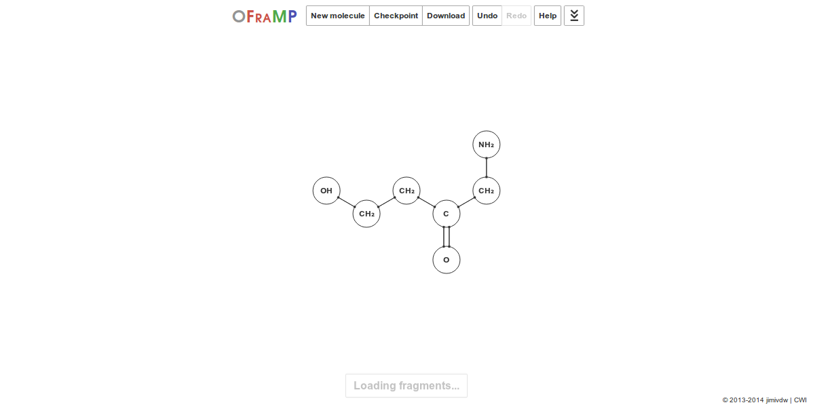
As the 'Loading fragments...' text indicates, the fragments matching this molecule are being identified. This can take anywhere from a few seconds to minutes depending on the size and nature of the query molecule.
Selecting atoms to parameterise
Once the 'Loading fragments...' text has dissapeared
you can begin to parameterise the molecule. In order to do so, you need
to select one or more atoms that you want to find fragments for. There are
multiple ways of doing this. The first and easiest of these is to make
a single-atom selection, which can be done by simply clicking on that atom:
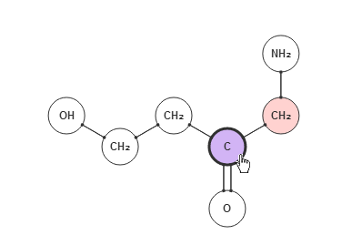
In order to select multiple atoms at once, one can best hold the right mouse button and drag to draw a selection rectangle in which all atoms will be selected (see left image below). Alternatively, one could also hold down the Ctrl key while clicking atoms, to add these to the selection. Finally, if both the Ctrl key and right mouse button are unavailable on your device, multi-atom selections can be made by activating the 'Selection modification mode'. This can be done by clicking the 'Modify selection' button in the 'Selection details' window (see right image below). Now, every atom you click will be added to the selection. This mode can be exited again by clicking the 'Stop modifying selection' button that will appear in the 'Selection details' window.
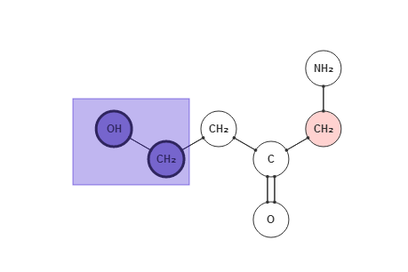
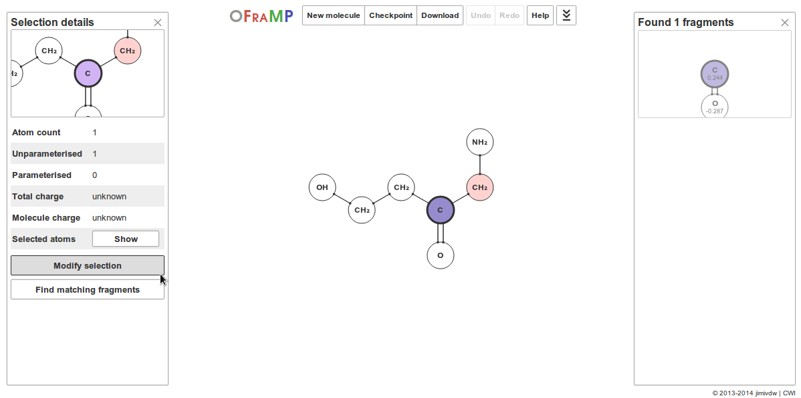
An important thing to note here is that, in some cases, for some atoms no fragments may have been found. This will be indicated by marking them with a red/pink background, as can be seen in the rightmost CH2 group of the molecule above. You can still assign charges to these atoms manually, which is discussed below.
Finding matching fragments
Once a selection (containing non-parameterised atoms) has been made,
fragments for that selection will automatically be loaded. They will be
displayed in a bar at the right side of the screen, ordered on descending
likeliness of being the best match:
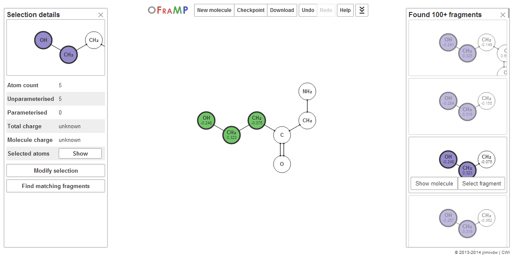
Hovering your mouse over the fragments and clicking them will preview their charges on the molecule. The fragments atoms will be indicated using a green background; their charges will be displayed below their element names. Upon clicking a fragment, two buttons will become visible: a 'Show molecule' button and a 'Select fragment' button. Upon clicking the 'Select fragment' button, the fragment charges will be copied to the molecule, after which you can continue parameterising by selecting new atoms. The 'Show molecule' button will show the molecule from which the fragment originates:
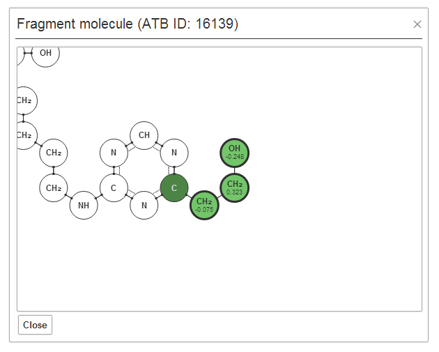
The image above shows the original molecule for the selected fragment in the previous image. The green atoms here indicate the atoms that are part of the fragment, which corresponds to the atoms that are marked in green in the molecule. The atom(s) that are marked in a darker green are the atoms that are part of the shell. In this case, that shell consists of just the leftmost C atom.
Tip:
The 'Fragment molecule' popup can be dragged around by holding the left
mouse button on the title bar (that contains the 'Fragment molecule...' text)
and dragging the mouse. This way, you can easily compare the fragment molecule
with the other molecule by dragging them such that both are visible.
In case you want to find fragments again for a set of atoms that have already been parameterised, fragments will not automatically be loaded. You can however still force the system to start looking for fragments by clicking the 'Find matching fragments' button in the 'Selection details' window (see first image of this section).
Completing the charges of a molecule
Upon continuing to parameterise a molecule, it is possible that you run
into fragments that contain atoms to which a charge has already been
assigned. These fragments will be marked with an orange background in
the list of fragments; the atoms in question are given a yellow background.
Upon clicking 'Select fragment', a popup will be shown that asks you to
pick a solution to the conflicting charges:
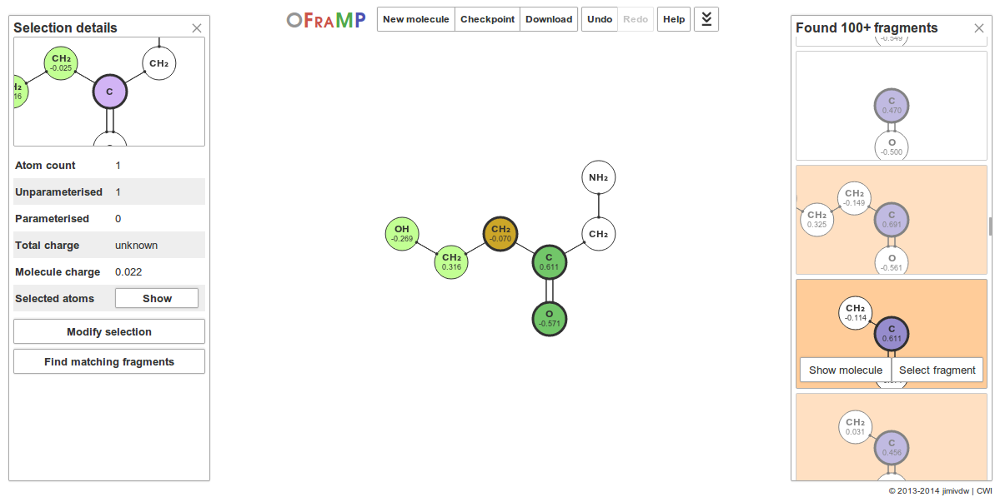
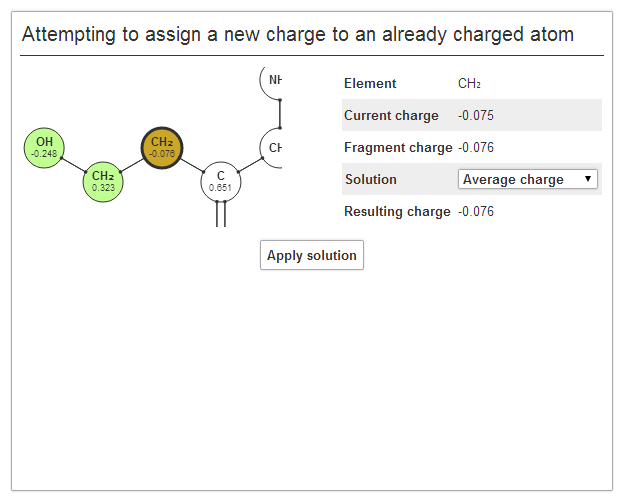
There are three different ways of solving the charge conflicts:
- Current charge: keep the charge the atom currently has in the molecule;
- Fragment charge: take the charge the atom has in the fragment;
- Average charge: use the average of the current and fragment charges.
When a charge has been assigned to all parameterisable atoms,
one of the following two popups will be shown:
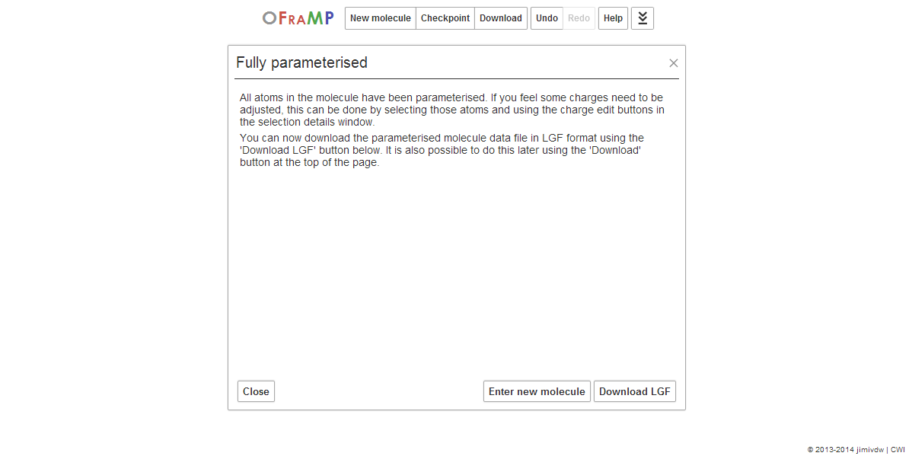
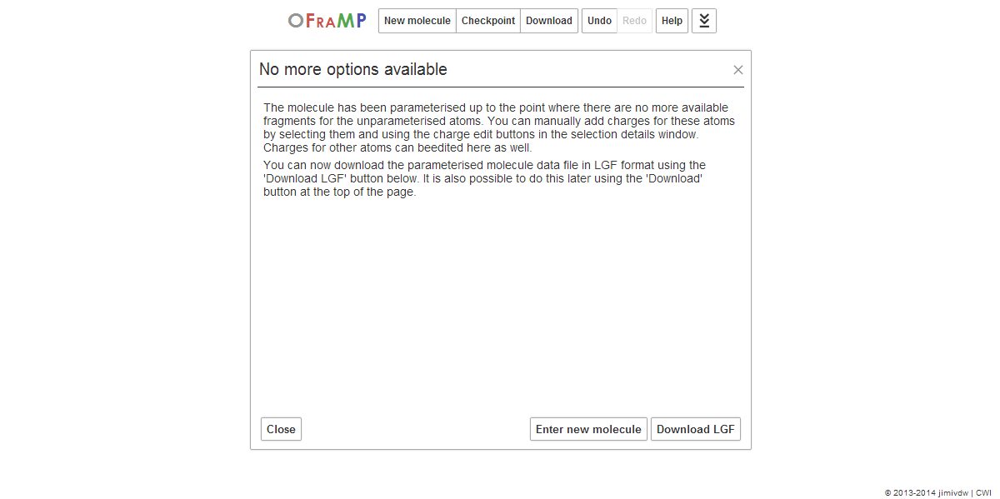
If the title of the popup says 'Fully parameterised', all atoms have been assigned a charge. The parametrisation of can now be finalised by the ATB by clicking the 'Send charges to ATB' button. If you are done, you can close this window and refresh the ATB molecules page. A new tab will be available "Fragment-Based Charges" which will utilise the OFraMP charges to produce molecular topology file of your choice.
OFraMP's advanced features
Besides just the basic functionality, OFraMP also has some features for the more advanced users. These features will be discussed in this section.
Using a different shell size
When finding matching fragments, the atoms around the fragment need to
match the original molecule as well. The shell size indicates the distance
from the fragment to which all atoms should match the original molecule.
By increasing the shell size, fragments will probably match the original
molecule better, but less fragments may be found. Decreasing the shell
size will have the opposite effect. The shell size can be modified at the
time when you enter a molecule into the system, by selecting a different
value for the 'Shell size':
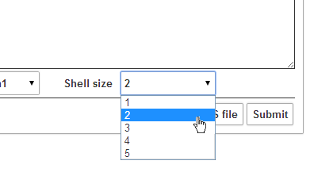
Manually adding / editing atom charges
If you wish to manually add or edit an atom's charge, you first need to
select that atom. In the 'Selection details' window, there will be a row
in the table that says 'Selected atoms', with a 'Show' button next to it
(where it says 'Hide' in the screenshot below). Clicking that button will
expand another table containing detailed information about all atoms that
are part of the current selection:
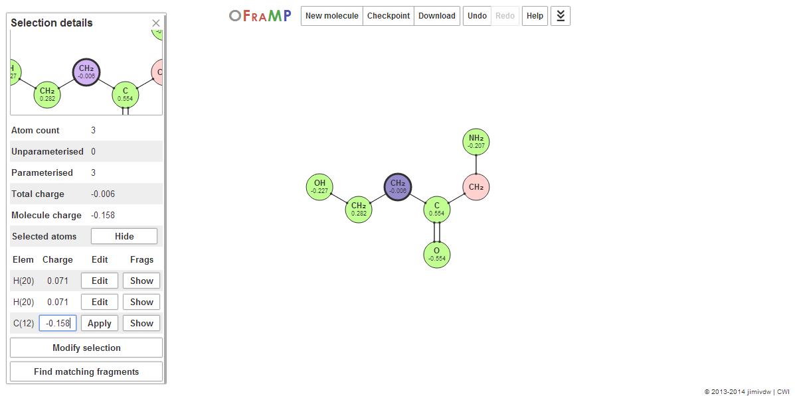
Tip:
Hovering your mouse over the 'Selected atoms' table rows will highlight
the atom which' row your mouse cursor is currently over. This way you
can easily determine which row corresponds to which atom.
The 'Elem' column contains the element of the atom and its IACM number (between parentheses). The 'Charge' column contains the atom's charge or, when the 'Edit' button is clicked, a text input field using which you can change the charge. After you have changed a charge, make sure to click the 'Apply' button in the 'Edit' column, to make sure the charges are also assigned properly.
Finally, the 'Show' button in the 'Frags' column will show the fragment(s)
that have been used to get to the charge the atom currently has:
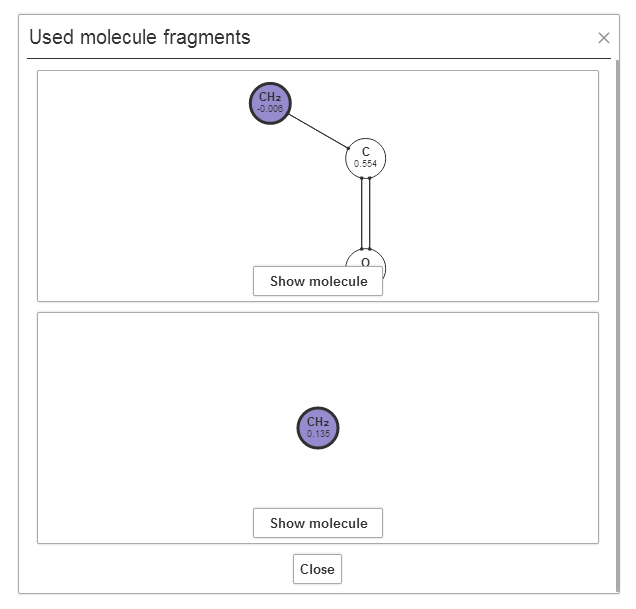
The molecules from which these fragments came can be displayed once again by clicking the 'Show molecule' button in that fragment (see the Finding fragments section above). These fragments may be useful to determine the charge of the atom.
Making and loading checkpoints
As parameterising molecules may take some time, OFraMP has the ability
to store the current state and load this at at a later stage. In order to
make such checkpoint, you should click the 'Checkpoint' button in the
menu at the top of the page. An OFraMP Structure Storage (.oss) file
should automatically be downloaded to your computer:
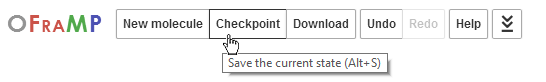
In order to load a checkpoint at a later stage, you should use the 'Load from OSS file' button in the 'Insert molecule' popup. This will open a file prompt that lets you select the OSS file, after which it will be loaded:
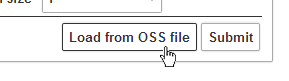
Changing visualisation settings
Many parameters of the molecule visualisation part of OFraMP can be
modified in the settings menu. To get there, you first need to open up
the 'advanced controls' menu by clicking the rigtmost menu button (looks
like some sort of downwards arrow, see left image). In that menu, you
find a 'Settings' button that will open up the 'OFraMP settings' menu
at the right side of the screen.
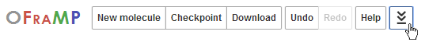
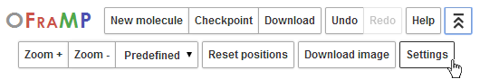
In the settings menu, many things can be changed. The image below shows
the effect of turning on the atom.showHAtoms parameter:
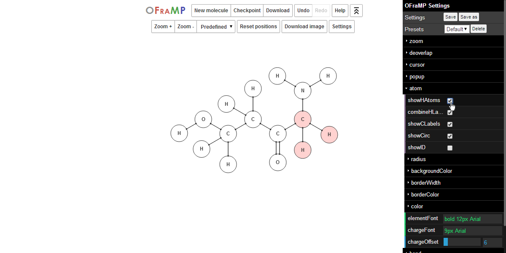
Once you are done changing the settings, you can close the menu by either clicking on the 'Settings' button in the 'advanced controls' menu again, or clicking on the 'OFraMP settings' title bar.
Keyboard shortcuts
For your convenience, OFraMP has some keyboard shortcuts. Below, you can find a list of them:
| Key combination | Action |
|---|---|
| Alt+Z | Undo last action |
| Alt+Shift+Z | Redo last action |
| Alt+Y | Redo last action |
| Alt+N | Open 'Insert molecule' popup (New) |
| Alt+O | Load a checkpoint from an OSS file (Open) |
| Alt+S | Create an OSS checkpoint (Save) |
| Alt+L | Download molecule as LGF |
| Alt+H | Open Help |
Note that these shortcuts all use the Alt key rather that the Ctrl key that is generally used for keyboard shortcuts. Unfortunately, most browsers use combinations with Ctrl as their own shortcuts and do not allow you to override them.
Solving OFraMP problems
Even though a lot of time has been invested into making OFraMP fault-proof, some problems might still occur. The most common problems are discussed below.
In case you encounter any problems that are not listed here, please report them as detailed as possible to the OFraMP issue tracker.
Online Atom Position Calculator (OAPoC) errors
OAPoC is the system that is used to get the positions of a molecule's atoms, in order
to be able to visualise the molecule. There are three problems you may encounter:
connection errors, version errors and generic errors. The connection and
version errors will look like the following images:
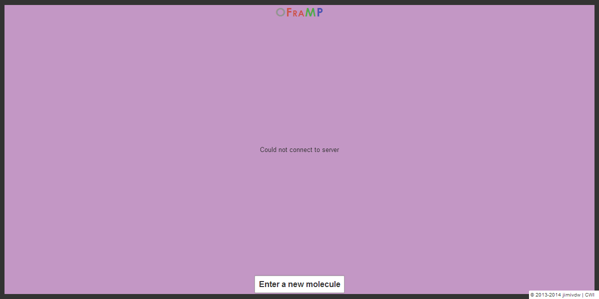
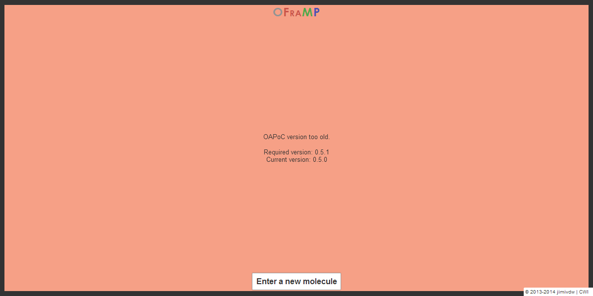
If you get a connection error, the best you can do is checking your internet connection and trying again. If this does not work, the OAPoC server is probably down for maintenance and should be up shortly afterwards. The best you can do then is wait for a while and then trying again to see if the server is back up.
Version errors should generally not occur at all. The only time you may see such error is just around a system update, when only half of the system has been updated. Again, these errors can only be resolved by waiting for a bit and trying again.
Generic errors all have to do with the molecule data you enter into the system, and may look like the following:
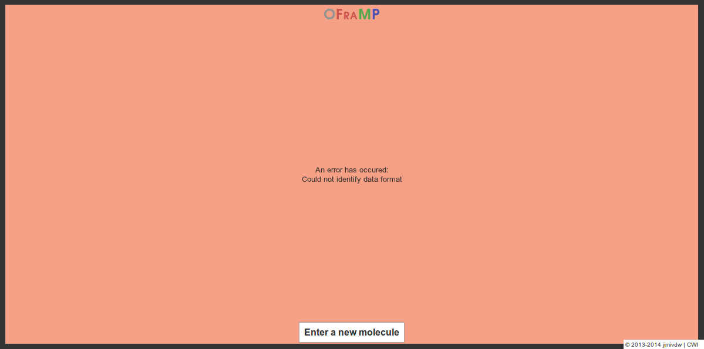
If you get an error like this, you have probably inserted some wrong data into the system. Please make sure the data is either in PDB, SMILES or InChI format, or is an ATB Molecule ID, and then try again.
Fragment Database (FDB) errors
FDB is the system responsible for generating and finding fragments that resemble the molecule you enter. Without it, OFraMP can still be used to display a molecule, but fragment finding will not be possible.
When FDB cannot be reached upon loading OFraMP, the following error
message will be shown:
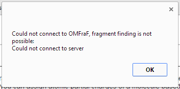
You can ignore this, and still enter a molecule into the system, but, as mentioned before, fragment finding will not be possible. The best way to resolve this is to just wait until FDB comes back up again, which it should do shortly.
FDB can also produce errors upon generating fragments (left image)
or finding fragments that match the selection (right image):
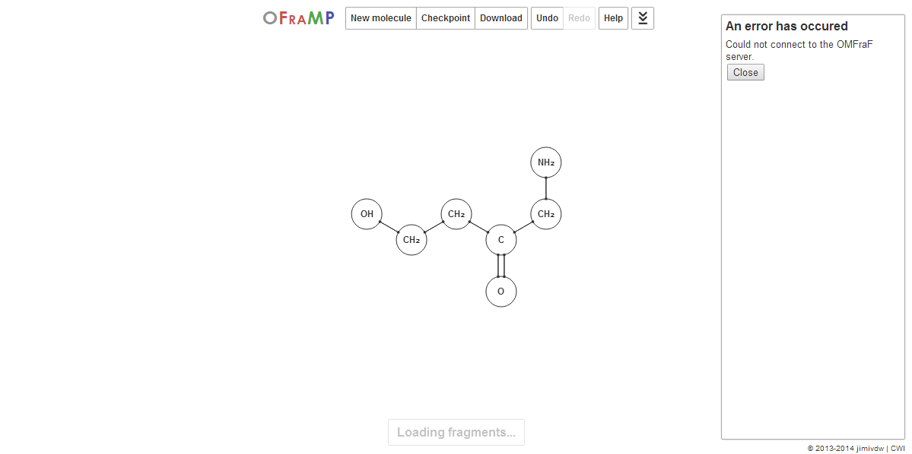
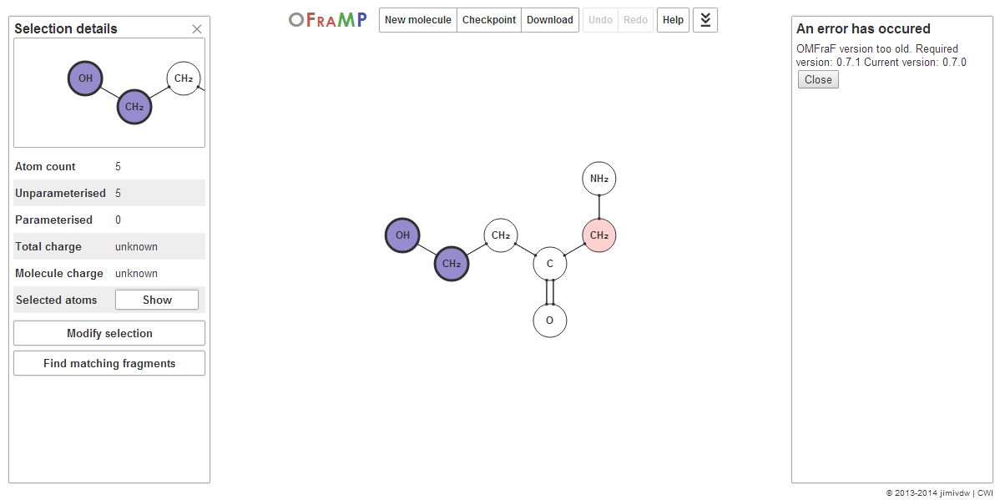
Both of these errors should generally be resolved automatically by just waiting a few minutes and then trying again. Unfortunately, there is not much else you can do, as both of these errors are due to connection problems.
Miscellaneous errors
One final common error is that the following screen is the only thing
that shows, and nothing happens afterwards:
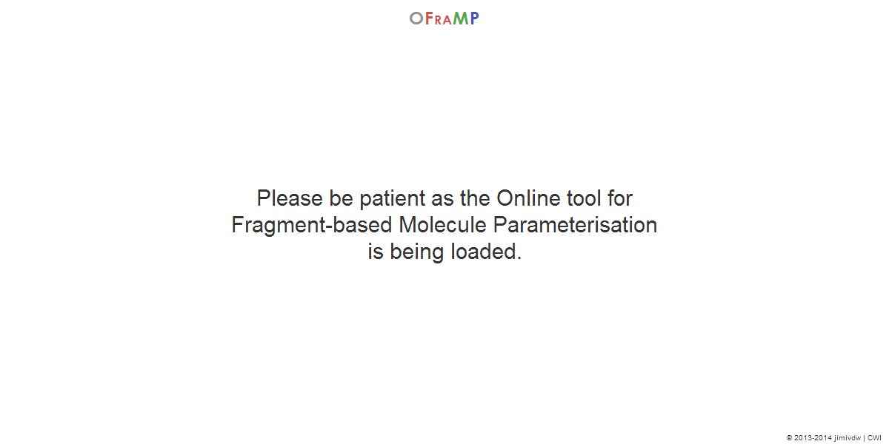
If this happens, you probably have disabled JavaScript in your browser. OFraMP is a modern tool that uses the latest web technologies and relies on JavaScript being activated. Please either turn on JavaScript in your browser for all pages (which is recommended), or add an exception for OFraMP. Without JavaScript, the system cannot function, unfortunately.